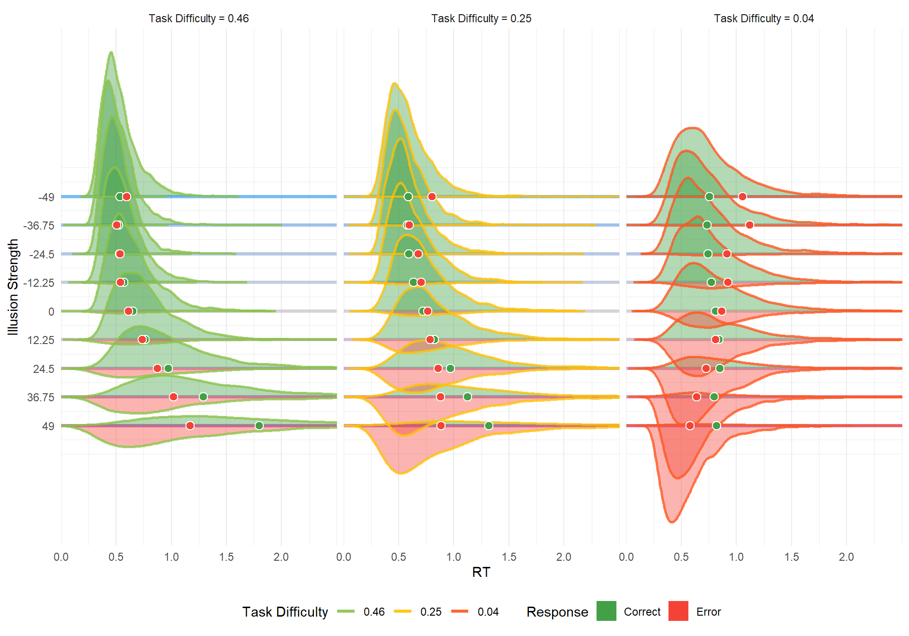
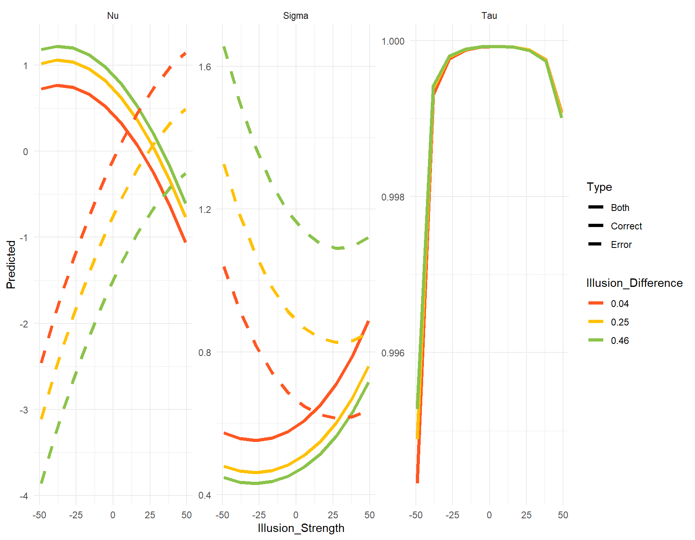

Code
library(tidyverse)
library(easystats)
library(brms)
library(rstan)
library(patchwork)
library(ggside)
library(ggdist)library(tidyverse)
library(easystats)
library(brms)
library(rstan)
library(patchwork)
library(ggside)
library(ggdist)m_lnr_muller <- readRDS("C:/Users/olive/Documents/m_lnr_muller_combined.rds")m_lnr_mullerWarning: There were 20 divergent transitions after warmup. Increasing
adapt_delta above 0.8 may help. See
http://mc-stan.org/misc/warnings.html#divergent-transitions-after-warmup Family: lnr
Links: mu = identity; nuone = identity; sigmazero = softplus; sigmaone = softplus; tau = logit
Formula: RT | dec(Error) ~ poly(Illusion_Difference, 2) * poly(Illusion_Strength, 2)
nuone ~ poly(Illusion_Difference, 2) * poly(Illusion_Strength, 2)
sigmazero ~ poly(Illusion_Difference, 2) * poly(Illusion_Strength, 2)
sigmaone ~ poly(Illusion_Difference, 2) * poly(Illusion_Strength, 2)
tau ~ Illusion_Difference + Illusion_Strength
minrt = 0.19
Data: df[df$Illusion_Type == "MullerLyer", ] (Number of observations: 3319)
Draws: 16 chains, each with iter = 1200; warmup = 1000; thin = 1;
total post-warmup draws = 3200
Regression Coefficients:
Estimate Est.Error
Intercept 0.43 0.01
nuone_Intercept -0.82 0.07
sigmazero_Intercept -0.28 0.02
sigmaone_Intercept 0.37 0.06
tau_Intercept 16.62 6.24
polyIllusion_Difference21 8.84 0.59
polyIllusion_Difference22 -1.42 0.58
polyIllusion_Strength21 -30.67 0.99
polyIllusion_Strength22 -11.75 0.82
polyIllusion_Difference21:polyIllusion_Strength21 0.28 1.02
polyIllusion_Difference22:polyIllusion_Strength21 0.02 0.98
polyIllusion_Difference21:polyIllusion_Strength22 -0.14 1.00
polyIllusion_Difference22:polyIllusion_Strength22 0.06 1.00
nuone_polyIllusion_Difference21 -26.22 2.16
nuone_polyIllusion_Difference22 -1.01 1.60
nuone_polyIllusion_Strength21 62.04 4.43
nuone_polyIllusion_Strength22 -10.99 2.45
nuone_polyIllusion_Difference21:polyIllusion_Strength21 0.01 0.99
nuone_polyIllusion_Difference22:polyIllusion_Strength21 -0.05 1.00
nuone_polyIllusion_Difference21:polyIllusion_Strength22 0.06 0.99
nuone_polyIllusion_Difference22:polyIllusion_Strength22 -0.05 0.99
sigmazero_polyIllusion_Difference21 -6.15 1.05
sigmazero_polyIllusion_Difference22 1.50 1.04
sigmazero_polyIllusion_Strength21 10.51 1.50
sigmazero_polyIllusion_Strength22 5.20 1.28
sigmazero_polyIllusion_Difference21:polyIllusion_Strength21 -0.02 0.98
sigmazero_polyIllusion_Difference22:polyIllusion_Strength21 -0.05 0.97
sigmazero_polyIllusion_Difference21:polyIllusion_Strength22 -0.01 1.01
sigmazero_polyIllusion_Difference22:polyIllusion_Strength22 0.01 0.98
sigmaone_polyIllusion_Difference21 15.86 2.37
sigmaone_polyIllusion_Difference22 0.13 1.89
sigmaone_polyIllusion_Strength21 -12.33 3.18
sigmaone_polyIllusion_Strength22 5.82 2.05
sigmaone_polyIllusion_Difference21:polyIllusion_Strength21 0.02 0.99
sigmaone_polyIllusion_Difference22:polyIllusion_Strength21 0.00 1.01
sigmaone_polyIllusion_Difference21:polyIllusion_Strength22 0.02 0.98
sigmaone_polyIllusion_Difference22:polyIllusion_Strength22 -0.01 0.99
tau_Illusion_Difference 0.02 1.01
tau_Illusion_Strength 0.02 0.18
l-95% CI u-95% CI
Intercept 0.40 0.46
nuone_Intercept -0.96 -0.68
sigmazero_Intercept -0.33 -0.23
sigmaone_Intercept 0.27 0.48
tau_Intercept 7.14 30.21
polyIllusion_Difference21 7.68 10.01
polyIllusion_Difference22 -2.58 -0.30
polyIllusion_Strength21 -32.73 -28.82
polyIllusion_Strength22 -13.40 -10.20
polyIllusion_Difference21:polyIllusion_Strength21 -1.67 2.27
polyIllusion_Difference22:polyIllusion_Strength21 -1.92 1.93
polyIllusion_Difference21:polyIllusion_Strength22 -2.12 1.87
polyIllusion_Difference22:polyIllusion_Strength22 -1.91 2.07
nuone_polyIllusion_Difference21 -30.60 -22.26
nuone_polyIllusion_Difference22 -4.27 1.97
nuone_polyIllusion_Strength21 53.72 70.94
nuone_polyIllusion_Strength22 -15.86 -6.31
nuone_polyIllusion_Difference21:polyIllusion_Strength21 -1.88 1.92
nuone_polyIllusion_Difference22:polyIllusion_Strength21 -2.05 1.86
nuone_polyIllusion_Difference21:polyIllusion_Strength22 -1.86 2.02
nuone_polyIllusion_Difference22:polyIllusion_Strength22 -1.99 1.85
sigmazero_polyIllusion_Difference21 -8.27 -4.11
sigmazero_polyIllusion_Difference22 -0.50 3.53
sigmazero_polyIllusion_Strength21 7.61 13.50
sigmazero_polyIllusion_Strength22 2.76 7.82
sigmazero_polyIllusion_Difference21:polyIllusion_Strength21 -1.94 1.95
sigmazero_polyIllusion_Difference22:polyIllusion_Strength21 -1.98 1.87
sigmazero_polyIllusion_Difference21:polyIllusion_Strength22 -1.99 1.99
sigmazero_polyIllusion_Difference22:polyIllusion_Strength22 -1.95 1.87
sigmaone_polyIllusion_Difference21 11.27 20.37
sigmaone_polyIllusion_Difference22 -3.58 4.00
sigmaone_polyIllusion_Strength21 -18.58 -6.32
sigmaone_polyIllusion_Strength22 1.67 9.75
sigmaone_polyIllusion_Difference21:polyIllusion_Strength21 -1.90 1.99
sigmaone_polyIllusion_Difference22:polyIllusion_Strength21 -1.99 1.94
sigmaone_polyIllusion_Difference21:polyIllusion_Strength22 -1.90 1.98
sigmaone_polyIllusion_Difference22:polyIllusion_Strength22 -1.90 1.96
tau_Illusion_Difference -1.99 2.03
tau_Illusion_Strength -0.34 0.38
Rhat Bulk_ESS
Intercept 1.01 1425
nuone_Intercept 1.02 812
sigmazero_Intercept 1.01 1806
sigmaone_Intercept 1.01 1126
tau_Intercept 1.00 1517
polyIllusion_Difference21 1.01 2811
polyIllusion_Difference22 1.01 2803
polyIllusion_Strength21 1.01 1333
polyIllusion_Strength22 1.01 1325
polyIllusion_Difference21:polyIllusion_Strength21 1.01 3133
polyIllusion_Difference22:polyIllusion_Strength21 1.01 3060
polyIllusion_Difference21:polyIllusion_Strength22 1.00 2691
polyIllusion_Difference22:polyIllusion_Strength22 1.01 3085
nuone_polyIllusion_Difference21 1.01 1625
nuone_polyIllusion_Difference22 1.01 1843
nuone_polyIllusion_Strength21 1.02 771
nuone_polyIllusion_Strength22 1.02 943
nuone_polyIllusion_Difference21:polyIllusion_Strength21 1.00 2755
nuone_polyIllusion_Difference22:polyIllusion_Strength21 1.00 3206
nuone_polyIllusion_Difference21:polyIllusion_Strength22 1.01 3356
nuone_polyIllusion_Difference22:polyIllusion_Strength22 1.00 3077
sigmazero_polyIllusion_Difference21 1.00 3234
sigmazero_polyIllusion_Difference22 1.01 3093
sigmazero_polyIllusion_Strength21 1.00 1655
sigmazero_polyIllusion_Strength22 1.01 1793
sigmazero_polyIllusion_Difference21:polyIllusion_Strength21 1.01 2878
sigmazero_polyIllusion_Difference22:polyIllusion_Strength21 1.01 2907
sigmazero_polyIllusion_Difference21:polyIllusion_Strength22 1.01 2865
sigmazero_polyIllusion_Difference22:polyIllusion_Strength22 1.01 3147
sigmaone_polyIllusion_Difference21 1.01 1700
sigmaone_polyIllusion_Difference22 1.00 2115
sigmaone_polyIllusion_Strength21 1.02 937
sigmaone_polyIllusion_Strength22 1.01 1538
sigmaone_polyIllusion_Difference21:polyIllusion_Strength21 1.01 2864
sigmaone_polyIllusion_Difference22:polyIllusion_Strength21 1.01 3149
sigmaone_polyIllusion_Difference21:polyIllusion_Strength22 1.01 3226
sigmaone_polyIllusion_Difference22:polyIllusion_Strength22 1.01 2594
tau_Illusion_Difference 1.01 3101
tau_Illusion_Strength 1.01 1043
Tail_ESS
Intercept 1314
nuone_Intercept 1087
sigmazero_Intercept 1912
sigmaone_Intercept 1577
tau_Intercept 1491
polyIllusion_Difference21 1938
polyIllusion_Difference22 2134
polyIllusion_Strength21 1341
polyIllusion_Strength22 1150
polyIllusion_Difference21:polyIllusion_Strength21 1985
polyIllusion_Difference22:polyIllusion_Strength21 2258
polyIllusion_Difference21:polyIllusion_Strength22 1697
polyIllusion_Difference22:polyIllusion_Strength22 2165
nuone_polyIllusion_Difference21 1949
nuone_polyIllusion_Difference22 2270
nuone_polyIllusion_Strength21 1289
nuone_polyIllusion_Strength22 1462
nuone_polyIllusion_Difference21:polyIllusion_Strength21 1952
nuone_polyIllusion_Difference22:polyIllusion_Strength21 1917
nuone_polyIllusion_Difference21:polyIllusion_Strength22 2471
nuone_polyIllusion_Difference22:polyIllusion_Strength22 2073
sigmazero_polyIllusion_Difference21 2358
sigmazero_polyIllusion_Difference22 2488
sigmazero_polyIllusion_Strength21 1709
sigmazero_polyIllusion_Strength22 1506
sigmazero_polyIllusion_Difference21:polyIllusion_Strength21 1794
sigmazero_polyIllusion_Difference22:polyIllusion_Strength21 2155
sigmazero_polyIllusion_Difference21:polyIllusion_Strength22 1981
sigmazero_polyIllusion_Difference22:polyIllusion_Strength22 2015
sigmaone_polyIllusion_Difference21 1861
sigmaone_polyIllusion_Difference22 2253
sigmaone_polyIllusion_Strength21 1643
sigmaone_polyIllusion_Strength22 1962
sigmaone_polyIllusion_Difference21:polyIllusion_Strength21 2238
sigmaone_polyIllusion_Difference22:polyIllusion_Strength21 2426
sigmaone_polyIllusion_Difference21:polyIllusion_Strength22 2412
sigmaone_polyIllusion_Difference22:polyIllusion_Strength22 1624
tau_Illusion_Difference 1890
tau_Illusion_Strength 902
Further Distributional Parameters:
Estimate Est.Error l-95% CI u-95% CI Rhat Bulk_ESS Tail_ESS
minrt 0.19 0.00 0.19 0.19 NA NA NA
Draws were sampled using sample(hmc). For each parameter, Bulk_ESS
and Tail_ESS are effective sample size measures, and Rhat is the potential
scale reduction factor on split chains (at convergence, Rhat = 1).pred <- modelbased::estimate_prediction(m_lnr_muller, iterations = 100, keep_iterations = TRUE, ci = NULL) |>
mutate(Error = as.factor(Error))
pred_rt <- pred[pred$Component == "rt", ]
pred_resp <- pred[pred$Component == "response", ]
pred_long <- bayestestR::reshape_iterations(pred_rt) |>
rename(pred_RT = iter_value) |>
full_join(
bayestestR::reshape_iterations(pred_resp) |>
mutate(pred_Response = as.factor(iter_value)) |>
select(pred_Response, iter_group, iter_index),
by = c("iter_group", "iter_index")
)
n_obs_0 <- sum(pred$Error == 0)
n_pred_0 <- sum(pred_long$pred_Response == 0) / n_distinct(pred_long$iter_group)
scale_0 <- n_obs_0 / n_pred_0
pred |>
ggplot(aes(x = RT)) +
geom_histogram(
data = filter(pred, Error == 0),
aes(y = after_stat(density) * scale_0, fill = Error),
binwidth = 0.05, alpha = 0.5
) +
geom_histogram(
data = filter(pred, Error == 1),
aes(y = -after_stat(density), fill = Error),
binwidth = 0.05, alpha = 0.5
) +
geom_line(
data = filter(pred_long, pred_Response == 0),
aes(
x = pred_RT, y = after_stat(density) * scale_0,
group = interaction(iter_group, pred_Response), color = pred_Response
),
stat = "density", alpha = 0.2
) +
geom_line(
data = filter(pred_long, pred_Response == 1),
aes(
x = pred_RT, y = -after_stat(density),
group = interaction(iter_group, pred_Response), color = pred_Response
),
stat = "density", alpha = 0.2
) +
geom_line(
data = filter(pred, Error == 0),
aes(
x = RT, y = after_stat(density) * scale_0,
group = 1
), color = "#43A047", linetype = "dashed",,
stat = "density", alpha = 1, linewidth = 1
) +
geom_line(
data = filter(pred, Error == 1),
aes(
x = RT, y = -after_stat(density),
group = 1
), color = "#F44336", linetype = "dashed",
stat = "density", alpha = 1, linewidth = 1
) +
scale_fill_manual(values = c("0" = "#43A047", "1" = "#F44336"), labels = c("0" = "Correct", "1" = "Error")) +
scale_color_manual(values = c("0" = "#43A047", "1" = "#F44336"), labels = c("0" = "Correct", "1" = "Error")) +
scale_y_continuous(labels = abs) +
coord_cartesian(xlim = c(0, 2.5)) +
guides(fill = guide_legend(override.aes = list(alpha = 1)), color = "none") +
theme_minimal()
plot_effect_densities <- function(model, datagrid, y_var = "Illusion_Difference") {
palette_diff <- c("#FF5722", "#FFC107", "#8BC34A") # Illusion_Difference
palette_strength <- c("#2196F3", "grey", "#9C27B0") # Illusion_Strength
if (y_var == "Illusion_Difference") {
color_var <- "Illusion_Strength"
cols <- palette_strength
y_cols <- palette_diff
} else {
color_var <- "Illusion_Difference"
cols <- palette_diff
y_cols <- palette_strength
}
reverse_axes <- identical(color_var, "Illusion_Difference")
nice_name <- function(var) {
if (var == "Illusion_Strength") "Illusion Strength"
else if (var == "Illusion_Difference") "Task Difficulty"
else gsub("_", " ", var)
}
# Step 0: Get predictions
pred <- modelbased::estimate_prediction(model, data = datagrid, iterations = 3200, keep_iterations = TRUE, ci = NULL)
color_vals_asc <- sort(unique(round(pred[[color_var]], 2)))
color_levels_chr <- as.character(color_vals_asc)
facet_levels <- if (reverse_axes) rev(color_levels_chr) else color_levels_chr
pred <- pred |>
mutate(!!sym(color_var) := factor(
as.character(round(.data[[color_var]], 2)),
levels = facet_levels
))
pred_rt <- pred[pred$Component == "rt", ]
pred_resp <- pred[pred$Component == "response", ]
pred_long <- bayestestR::reshape_iterations(pred_rt) |>
rename(pred_RT = iter_value) |>
full_join(
bayestestR::reshape_iterations(pred_resp) |>
mutate(pred_Response = as.factor(iter_value)) |>
select(pred_Response, iter_group, iter_index),
by = c("iter_group", "iter_index")
)
# Step 1: Density per y_var x color_var x pred_Response
# (this `y` sign convention - Correct = +, Error = - - is the mirroring
# rule and must never be touched by axis-order logic below)
dens_data <- pred_long |>
group_by(.data[[y_var]], .data[[color_var]]) |>
mutate(n_total = n()) |>
group_by(.data[[y_var]], .data[[color_var]], pred_Response) |>
filter(n() >= 2) |>
reframe(
prop = n() / first(n_total),
x = density(pred_RT)$x,
y = density(pred_RT)$y * prop
) |>
mutate(y = if_else(pred_Response == 0, y, -y))
mean_data <- pred_long |>
group_by(.data[[y_var]], .data[[color_var]], pred_Response) |>
summarise(mean_RT = mean(pred_RT, na.rm = TRUE), .groups = "drop")
# Step 2: Row position by rank (decoupled from y's internal sign)
val_levels_sorted <- sort(unique(round(dens_data[[y_var]], 6)))
n_levels <- length(val_levels_sorted)
rank_asc <- seq_len(n_levels)
pos_for_level <- if (reverse_axes) {
setNames(rev(rank_asc), as.character(val_levels_sorted))
} else {
setNames(rank_asc, as.character(val_levels_sorted))
}
scale_factor <- 1.5
dens_data <- dens_data |>
mutate(
y_offset = pos_for_level[as.character(round(.data[[y_var]], 6))],
y_scaled = y_offset + y * scale_factor
)
mean_data <- mean_data |>
mutate(y_offset = pos_for_level[as.character(round(.data[[y_var]], 6))])
break_pos <- pos_for_level[as.character(val_levels_sorted)]
ord <- order(break_pos)
breaks_pos <- break_pos[ord] # ascending position: bottom -> top of panel
breaks_val <- val_levels_sorted[ord] # the true value sitting at each position
# Step 2b: Baseline lines colored by the y_var gradient (instead of flat grey)
y_ramp <- scales::colour_ramp(y_cols)
hline_colors <- y_ramp(scales::rescale(breaks_val, from = range(val_levels_sorted)))
hline_data <- tibble(y = breaks_pos, line_col = hline_colors)
# Step 3: Plot
p <- dens_data |>
ggplot(aes(
x = x,
y = y_scaled,
group = interaction(.data[[y_var]], .data[[color_var]], pred_Response),
color = as.factor(.data[[color_var]]),
fill = factor(pred_Response)
)) +
geom_hline(
data = hline_data,
aes(yintercept = y, color = I(line_col)),
inherit.aes = FALSE,
linewidth = 1.3,
alpha = 0.6
) +
geom_ribbon(
aes(ymin = y_offset, ymax = y_scaled),
alpha = 0.4,
color = NA
) +
geom_line(alpha = 0.8, linewidth = 1) +
geom_point(
data = mean_data,
aes(x = mean_RT, y = y_offset, fill = pred_Response),
inherit.aes = FALSE,
shape = 21, size = 3, color = "white", stroke = 0.6,
show.legend = FALSE
) +
scale_y_continuous(breaks = breaks_pos, labels = breaks_val) +
scale_x_continuous(expand = c(0, 0), breaks = c(0, 0.5, 1, 1.5, 2)) +
scale_color_manual(values = setNames(cols, color_levels_chr)) +
scale_fill_manual(
values = c("0" = "#43A047", "1" = "#F44336"),
labels = c("0" = "Correct", "1" = "Error")
) +
labs(
x = "RT",
y = nice_name(y_var),
color = nice_name(color_var),
fill = "Response"
) +
coord_cartesian(xlim = c(0, 2.5)) +
guides(fill = guide_legend(override.aes = list(alpha = 1))) +
theme_minimal() +
theme(legend.position = "bottom") +
facet_wrap(
vars(.data[[color_var]]),
labeller = as_labeller(function(x) paste0(nice_name(color_var), " = ", x))
)
p
}
plot_effect_densities(
model = m_lnr_muller,
datagrid = insight::get_datagrid(m_lnr_muller, length = c(Illusion_Difference = 8, Illusion_Strength = 3)),
y_var = "Illusion_Difference"
)Warning in geom_hline(data = hline_data, aes(yintercept = y, color =
I(line_col)), : Ignoring unknown parameters: `inherit.aes`
plot_effect_densities(
model = m_lnr_muller,
datagrid = insight::get_datagrid(m_lnr_muller, length = c(Illusion_Difference = 3, Illusion_Strength = 9)),
y_var = "Illusion_Strength"
)Warning in geom_hline(data = hline_data, aes(yintercept = y, color =
I(line_col)), : Ignoring unknown parameters: `inherit.aes`
# Note: In an LNR model, nu represents the mean of the log-finishing times: a higher nu means a slower accumulator.
# The exact point where the nuzero and nuone lines cross corresponds to a 50% error rate (assuming sigmazero and sigmaone are roughly equal).
pred <- rbind(
estimate_relation(m_lnr_muller, length = c(Illusion_Difference = 3, Illusion_Strength = 10), predict = "mu") |>
mutate(Parameter = "Nu", Type = "Correct"),
estimate_relation(m_lnr_muller, length = c(Illusion_Difference = 3, Illusion_Strength = 10), predict = "nuone") |>
mutate(Parameter = "Nu", Type = "Error"),
estimate_relation(m_lnr_muller, length = c(Illusion_Difference = 3, Illusion_Strength = 10), predict = "sigmazero") |>
mutate(Parameter = "Sigma", Type = "Correct"),
estimate_relation(m_lnr_muller, length = c(Illusion_Difference = 3, Illusion_Strength = 10), predict = "sigmaone") |>
mutate(Parameter = "Sigma", Type = "Error"),
estimate_relation(m_lnr_muller, length = c(Illusion_Difference = 3, Illusion_Strength = 10), predict = "tau") |>
mutate(Parameter = "Tau", Type = "Both")
)
pred |>
mutate(Illusion_Difference = as.factor(Illusion_Difference)) |>
ggplot(aes(x = Illusion_Strength, y = Predicted)) +
# geom_ribbon(aes(ymin = CI_low, ymax = CI_high, group = Illusion_Difference), alpha = 0.1) +
geom_line(aes(color = Illusion_Difference, group = interaction(Illusion_Difference, Type), linetype = Type),
linewidth = 1.5) +
scale_color_manual(values = c("#FF5722", "#FFC107", "#8BC34A")) +
scale_linetype_manual(values = c("Correct" = "solid", "Error" = "dashed", "Both" = "solid")) +
facet_wrap(~Parameter, scales = "free_y") +
theme_minimal()